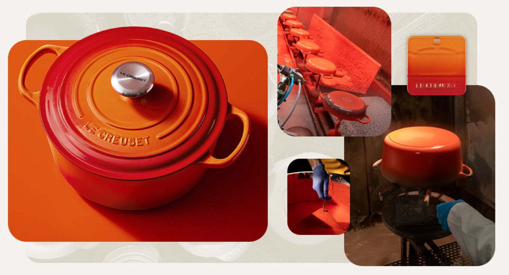
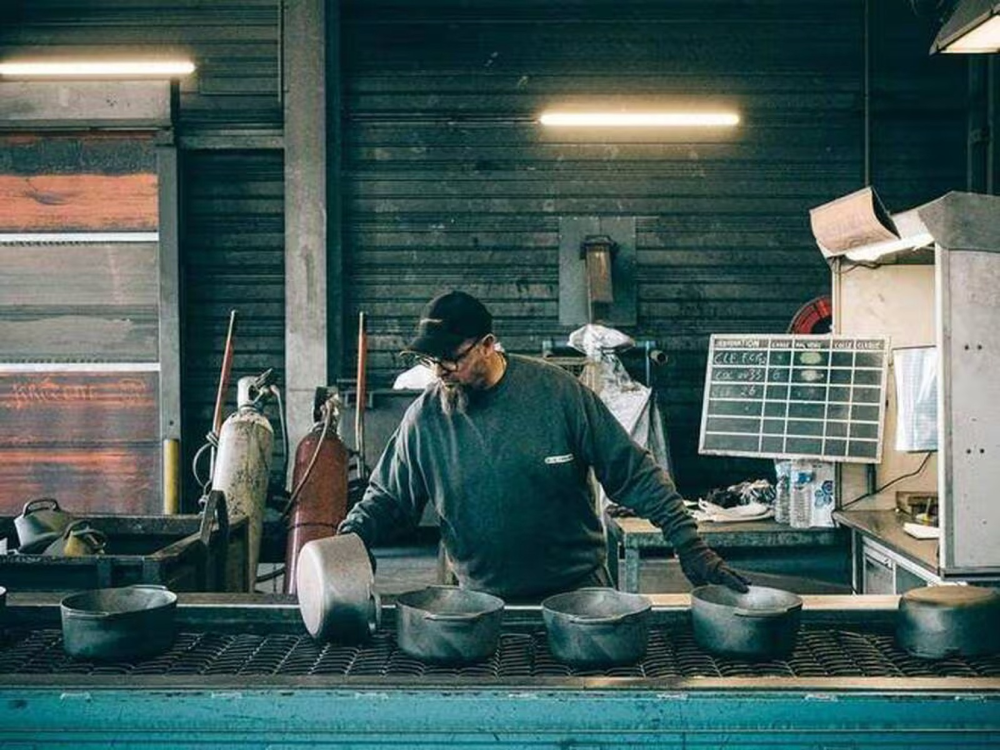
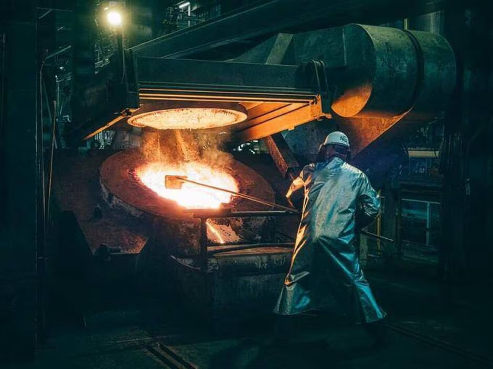
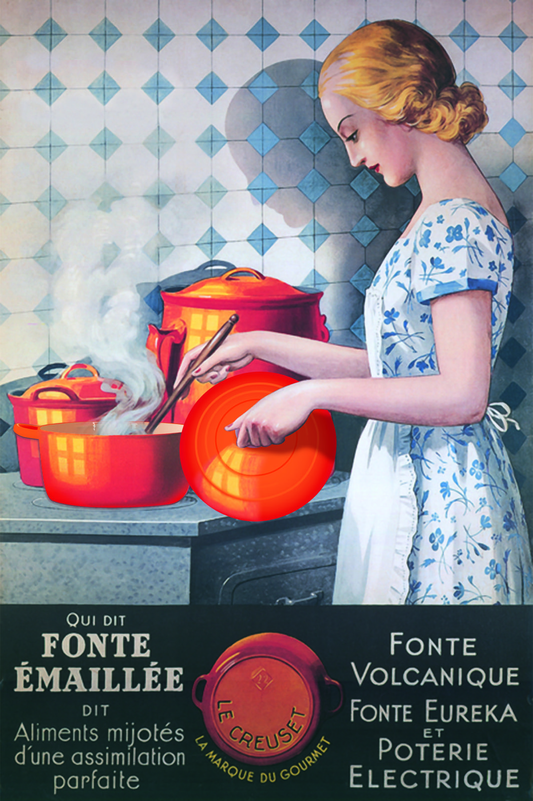
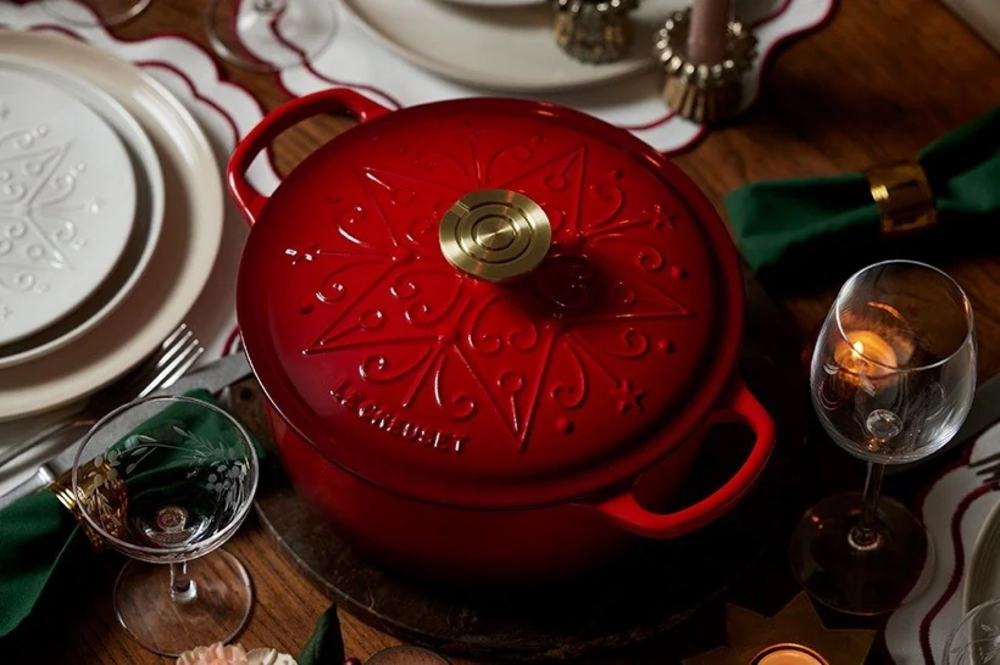
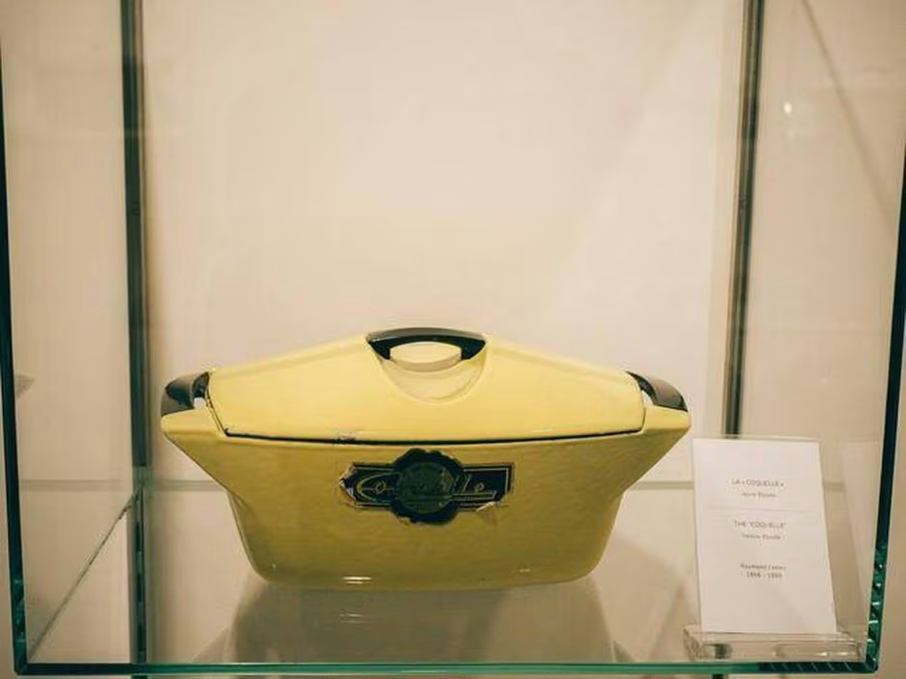
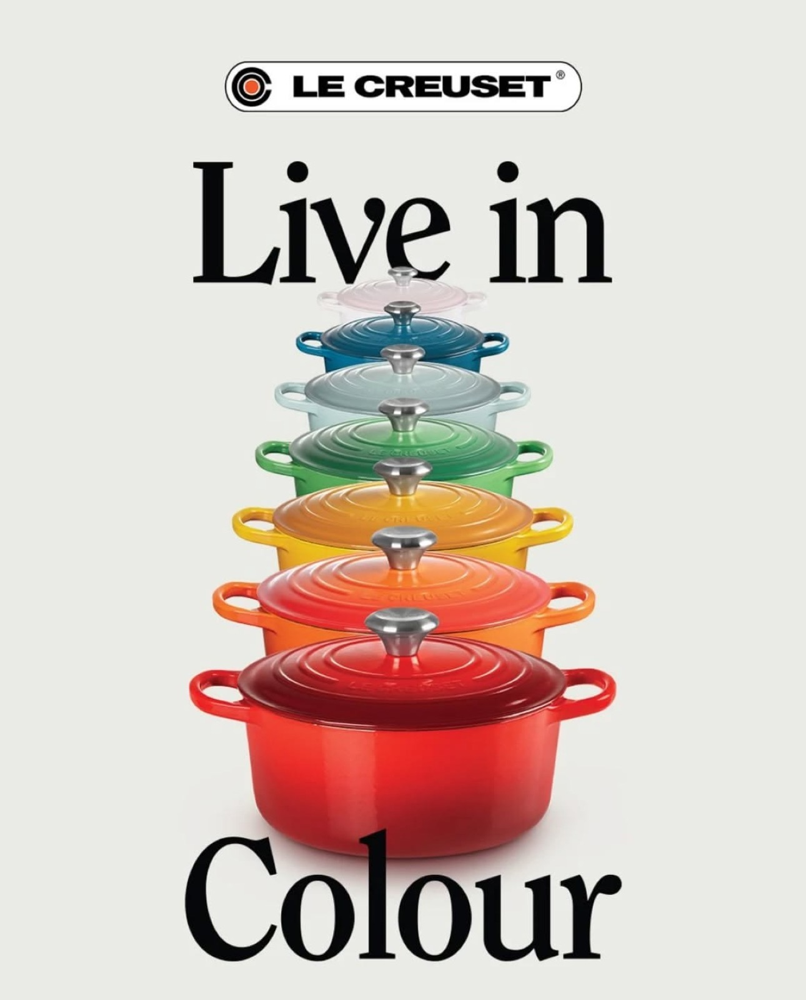
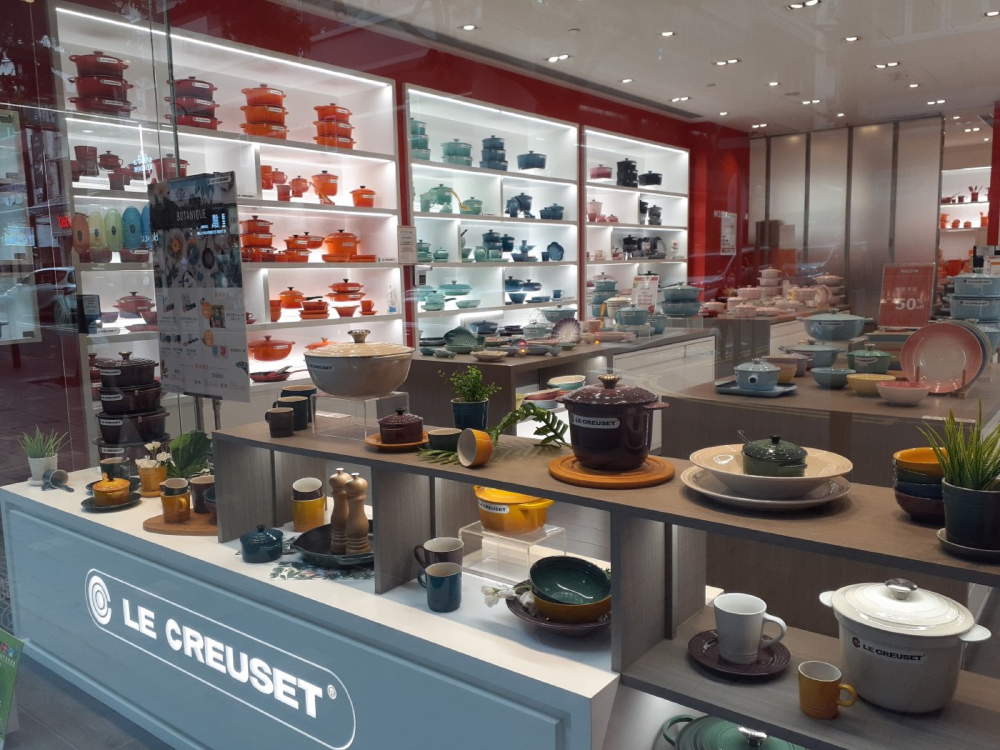
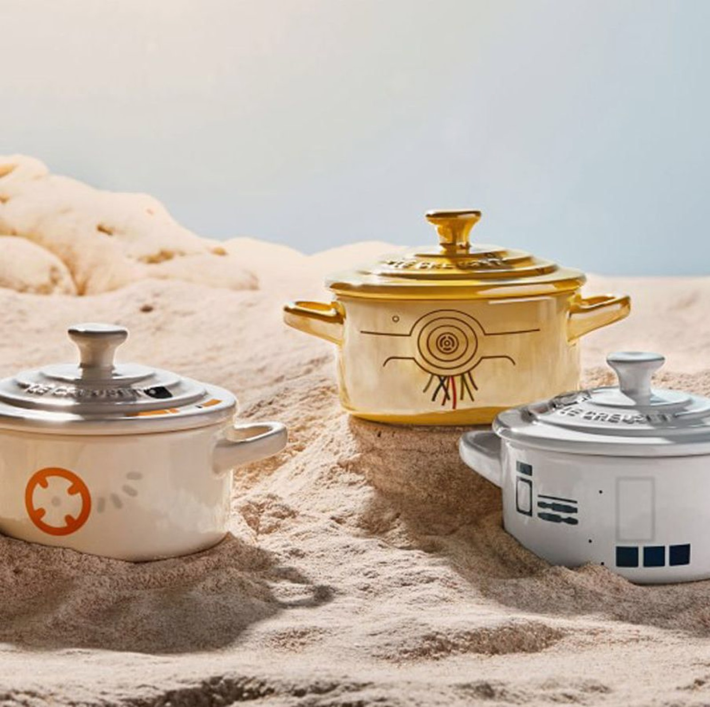
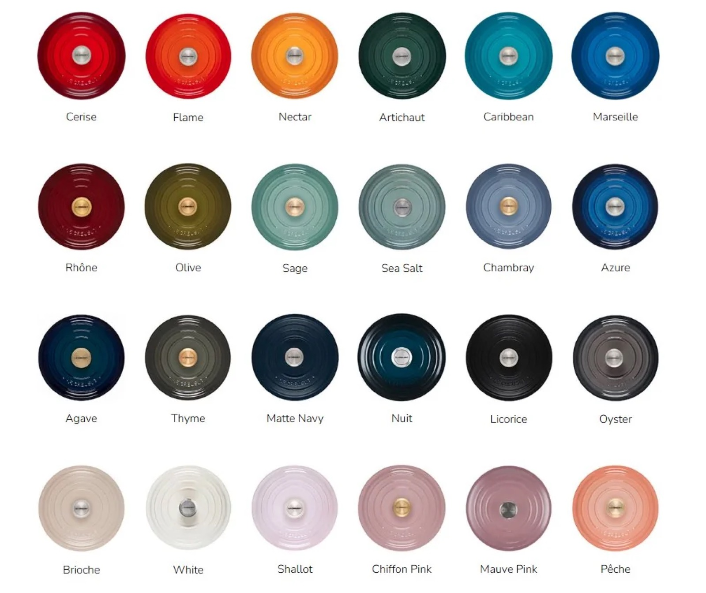

Une marque française
Le Creuset
Une histoire en couleurs
Présentation d'Olesya I.
Une histoire en couleurs






« Timeless elegance »
une élégance intemporelle
« A shade for every soul »
une couleur pour chaque âme




Avez-vous des questions ?